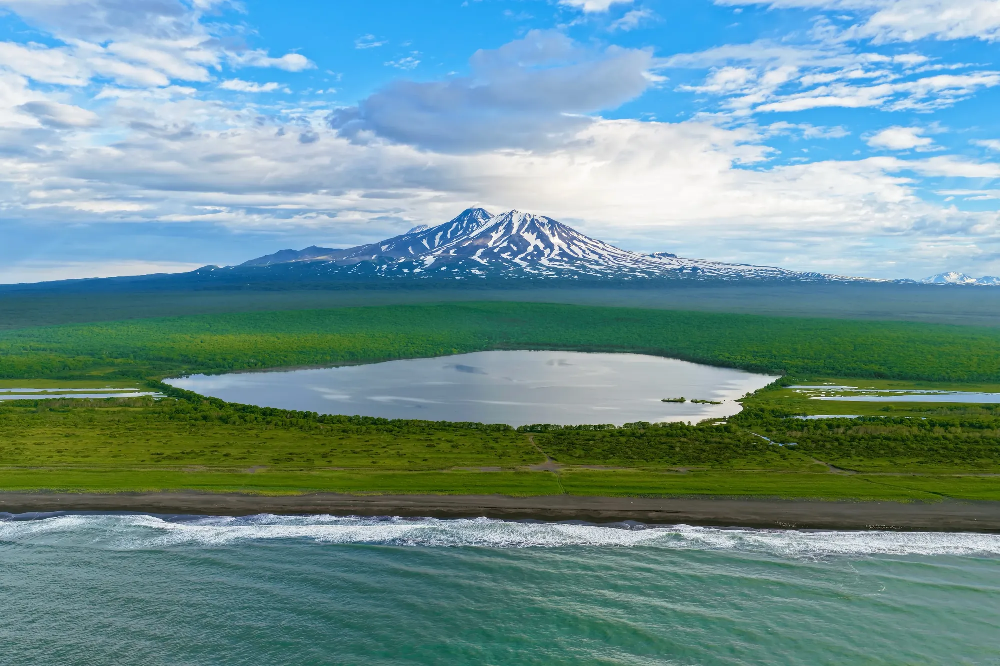
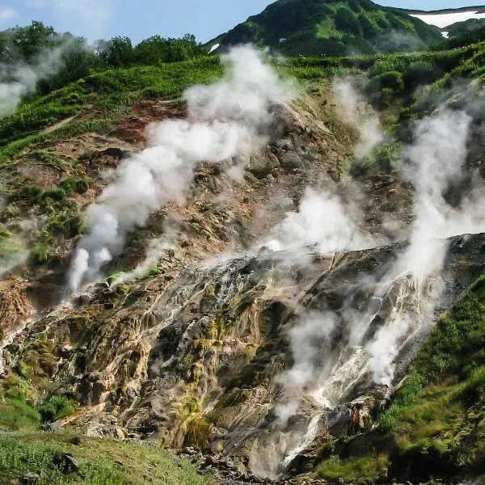
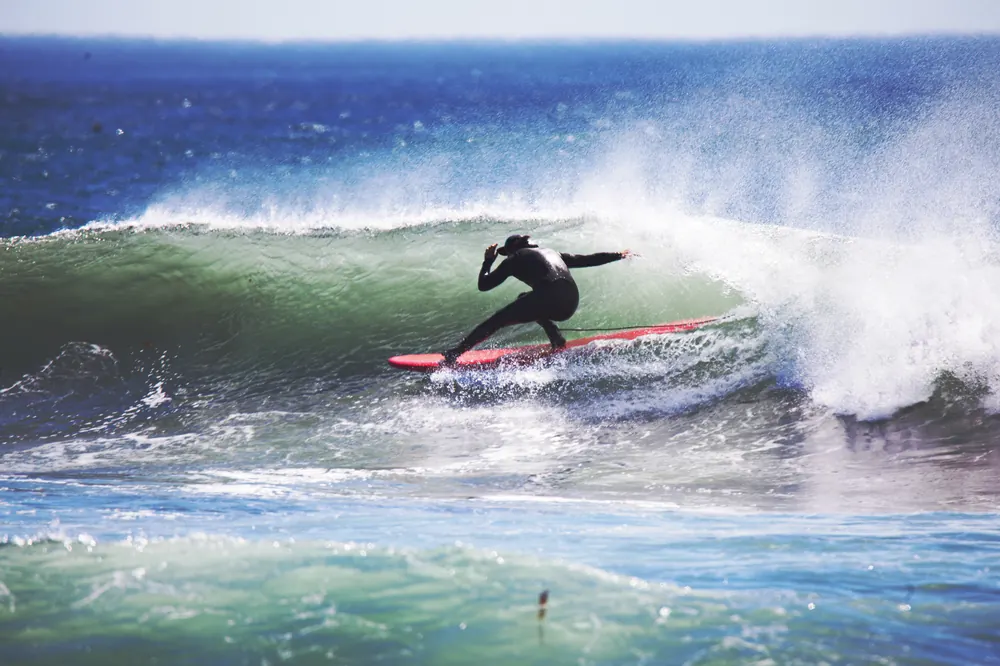
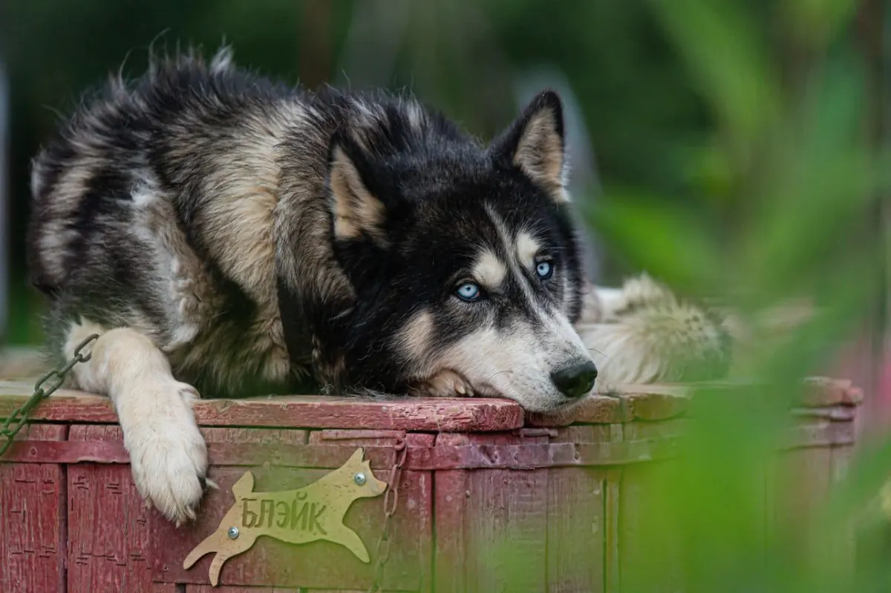
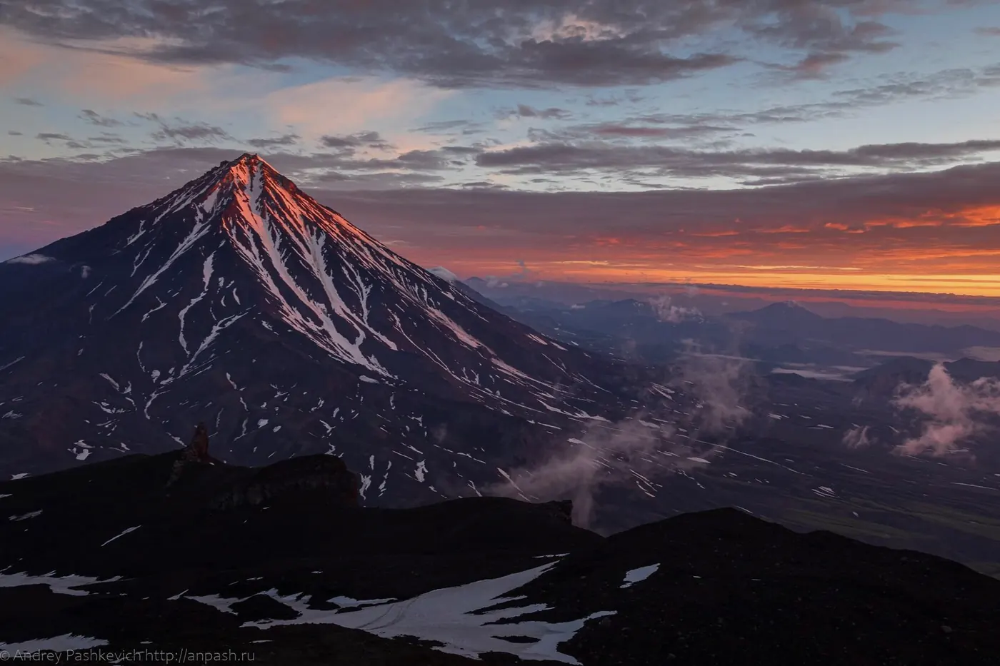
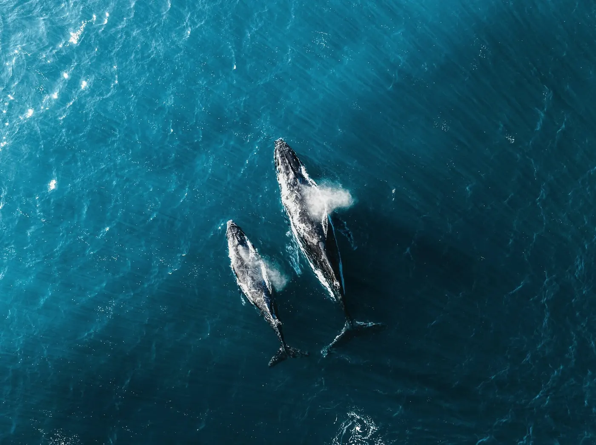
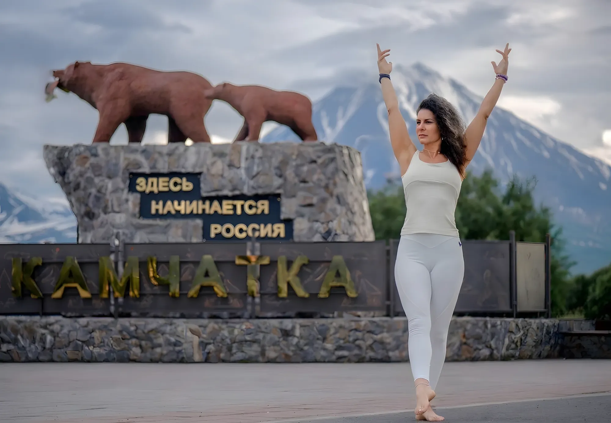

3–12 июля
- Преподаватель
- Мария Хавкина
- Длительность
- 10 дней
- Программа
- Йога-тур на Камчатку, десятидневная программа
- Стоимость
- от 230 000 ₽ с человека за 10 дней
Июль – сентябрь 2027
Йога на краю земли

Фото: maxpeyn
Три летних заезда идут по одному маршруту и одной десятидневной программе, отличаются только датами и преподавателями. Отдельный маршрут только у тура на Курильское озеро: 8 дней и своя программа.
Группы до 24 человек. Трансферы, питание, проживание, необходимое на маршруте снаряжение — все включено.
Листайте карточки вбок
Выбранный заезд запоминается и сразу подставляется в форму заявки внизу страницы.
В программе есть экскурсии, длительные выезды и восхождения на вулканы. Некоторые маршруты занимают 6–10 часов — это важно учитывать при выборе поездки. Перед бронированием обсудим ваш опыт и подготовку, чтобы вы могли оценить нагрузку и задать вопросы о маршрутах.
В программе предусмотрены ранние выезды и несколько часов активности.
Для подготовленных путешественников — Авачинский вулкан, для начинающих в программе указана экструзия Верблюд.
До бронирования можно обсудить с организатором свой опыт и задать вопросы о сложности маршрутов.
К вулканам и горячим гейзерам — наполниться огнем Земли.
К Тихому океану — взять частичку его мощи.
Увидеть медведя и касаток — запомнить силу дикой природы.
И все это связано йогой! И конечно, каждая локация входит в стоимость, никаких «опций на месте».

экскурсия / включено
Фумарольные поля, Мутновская геотермальная станция, Марсианские поля по пути, Вилючинский перевал и дорога по серпантину у его подножия

активный день на побережье / включено
Тихий океан, йога, сёрфинг, баня и купание в океанских волнах

ездовые псы и быт коренных народов / день отдыха
Какая Камчатка без ее современного символа — упряжки ездовых собак победителей гонки «Берингия»! Мы посетим питомник «Снежные псы», познакомимся с бытом коренных народов, попробуем шурпу из оленя. А после посетим музей Кроноцкого заповедника и термальные источники.

Вулканы / 3 дня
Три восхождения разного темпа — от акклиматизационного трека к циру вулкана Вачкажец, к голубому озеру в кратере Горелого, и, для самых смелых — 10-часовое восхождение на вершину Авачинского вулкана! Обеды на вершине исполинов.

выход в открытый океан на яхте / 1 день
Выход в море из Авачинской бухты в Бухту Русская: кормовые косяки, касатки и киты на миграции. Выход зависит от отливов и погоды на воде — дата держится гидом до последнего. Обед на яхте.
Не входит в программу летних заездов: свой маршрут и своя программа на 8 дней

дикая природа / спец. йога-тур на Озеро Курильское / 12–19 сентября 2027
Курильское озеро — крупнейшее в Евразии нерестилище нерки. Ежегодно сюда заходит от 1,5 до 6 миллионов особей.
У нерки есть удивительная способность — хоминг. Рыбы находят путь из океана в родную реку (в данном случае — в Озёрную), где когда-то вылупились из икринок.
Медвежья «мекка». Обилие рыбы привлекает сюда огромное количество бурых медведей. В сезон нереста у озера собирается более 200 особей. Наблюдать за медведями, которые ловят рыбу в воде, — одно из главных зрелищ, ради которых сюда едут туристы. Для безопасности посетителей оборудованы специальные смотровые площадки.
Даты зафиксированы:
3–12 июля — тур с Марией Хавкиной
15–24 июля — тур с Дмитрием Дёминым и Глебом Мазаевым
19–28 августа — тур с Игорем Пантюшевым
с 09:00 до 18:00встреча в аэропорту Елизово, фотографирование на стелле «Здесь начинается Россия», трансфер в гостиницу.
16:00после-полётное СПА или баня
19:00приветственный «Камчатский ужин — рыбный стол», знакомство группы, представление тур-лидеров
20:00практика йоги
06:30лёгкий завтрак
07:15трансфер на Морвокзал
08:00Морская прогулка: в бухту Русская «Навстречу к китам и касаткам»
18:30–19:00возвращение в гостиницу
19:30ужин
20:00практика йоги
06:30лёгкий завтрак
07:00выезд в Малую долину гейзеров, водопад «Снежные барс»
Купание в бассейне с термальной водой
20:00–20:30возвращение в гостиницу
20:30ужин
21:00практика йоги
06:30лёгкий завтрак
07:00(возможно раньше, зависит от карты отливов), сёрфинг на Тихом океане
09:00–12:00баня на Тихом
13:00обед, прогулка
15:00практика йоги на океане
(По этому дню все зависит от погоды, если дождь, то после бани и сёрфинга едем домой)
18:00ужин
20:00практика йоги
07:00лёгкий завтрак
08:00экскурсия в цирк вулкана Вачкажец и озеро Тахтолоч
Купание в Начикинском санатории, обед в пирожковой столице Камчатки — п.Сокоч, возвращение в гостиницу
19:00ужин
20:00практика йоги
09:00завтрак
10:00экскурсия в питомник ездовых собак, 6-кратных победителей гонки на собачьих упряжках семьи Семашкиных «Снежные псы»
14:00экскурсия в музей Кроноцкого заповедника
15:30Купание в радоновых источниках «Зеленовские озерки»
18:00ужин
20:00практика йоги
06:30завтрак
07:00Экскурсия на вулкан Горелый, обед на маршруте
18:00термальные источники
20:00возвращение в гостиницу, ужин
21:00практика йоги
09:00завтрак
10:00едем за сувенирами и Камчатскими мерчами
11:30обзорная экскурсия по городу на автобусе и пешая в исторической части города
15:00краеведческий музей / музей Океанрыблота / музей Вулканариум
18:00возвращение, ужин
20:00практика йоги
06:00завтрак
07:00выезд на восхождение на вулкан Авача (около 8–12 часов)
20:00возвращение, ужин
21:00практика йоги
07:00прощальный завтрак, упаковка чемоданов
12:00в магазин за рыбой
13:00трансфер в аэропорт
Программа может меняться в связи с погодой, решение принимается тур-лидером и гидами накануне экскурсии
Практики в туре ведут профильные специалисты — с учётом нагрузки на маршруте и состояния каждой участницы.
Тур 3–12 июля
Врач, специалист по адаптивной физической культуре, йогатерапевт и психолог
Проректор по развитию Санкт-Петербургского института восточных методов реабилитации, автор книги «Мамина йога от А до Я» и проекта YogaMammy.
Практика с Марией — мягкая, глубокая и выверенная работа с телом. Помимо групповых занятий каждая участница получает персональные рекомендации по физической терапии.
Тур 15–24 июля
Преподаватели хатха-йоги и медитации
Дмитрий практикует хатха-йогу с 2002 года, основал школу йоги «Чатуранга» и с 2008 года обучает преподавателей. Дипломированный специалист по лечебной физкультуре, автор книг по теории и практике йоги.
Глеб практикует с 2009 года и с 2013 года учится в Непале, Индии и Гималаях у носителей традиции тибетского буддизма. Имеет благословение наставника на проведение медитаций и лекций по работе с умом.
Тур 19–28 августа
Автор проекта «Йога. Культура движения», сооснователь Института современной теории и практики йоги
Практикует йогу с 2010 года, живёт и преподаёт в Новосибирске, ездит с семинарами по всей России и за её пределы. Ведёт годовой тичерс-курс для преподавателей йоги.
Его метод строится на специальных последовательностях асан под задачи практикующего и на современных знаниях анатомии, физиологии и биомеханики. В этом стиле преподаёт и Елена.
Спец. йога-тур 12–19 сентября
Преподаватель йоги, йогатерапевт, yoga-traveller
Стаж личной практики — с 2004 года, преподавательский — с 2008 года. Тур-лидер и ведущая йога-туров по России (Приморье, Алтай, Камчатка) и миру (Таиланд, Индия, Шри-Ланка) — с 2014 года. В сентябре Юлия ведёт специальный йога-тур на Курильское озеро — 12–19 сентября 2027 года: практики йоги, наблюдение за бурыми медведями со специальных смотровых площадок и фотосъёмка дикой природы. Программа тура — отдельная, со своим темпом и расписанием.
«Путешествуя, узнаешь мир. Практикуя йогу, узнаешь себя»
Мой проект #йогиВдороге дарит возможность путешествовать со смыслом и с пользой. Возвращаясь домой, вы уже планируете новую поездку
На Камчатке нужно учитывать всё: погоду, природные реалии, наводнения и сели, карту ветров и отливов.
Работа над туром начинается за год до вашего приезда и заранее бронируется всё: от лучших автомобилей и водителей до гостиниц и поваров.
С детства на Камчатке, всем сердцем ее любят и уважают. Девиз наших гидов «даже если вы решите потеряться — я вас найду и спасу» и «нет невозможных идей, есть их интересные решения!»
Гостиница, автомобиль, зал для йоги предназначены для малой группы и вмещают не более 24 человек (вместе с ведущим, гидом и поваром). Мы 10 дней проводим вместе, никому не мешаем и создаем свою маленькую Вселенную.
Трансферы, автомобили, вахтовые автобусы, катера, все пропуска и разрешения — забронированы заранее и вы этим не занимаетесь.
Страховка на все восхождения, спутниковая связь, аптечка и рация у каждого гида.
Завтрак и ужин на базе, обеды на маршрутах — полевые кухни и термосы. Меню согласуем с диетами заранее. С группой работает опытный повар, принимающий заявки и учитывающий все пожелания.
Задача тур-лидера провести тур так, чтобы даже дни непогоды вы провели с наибольшим результатом и точно их не потеряли!
Стоимость зависит от размещения в двухместном номере без удобств.
Цена включает всю программу тура: трансферы, проживание, питание и все экскурсии.
первый этаж гостиницы
Двухместный номер без удобств
всего 3 местаДуш и туалет в коридоре сразу за дверью номера.
Верхняя полка в двухместном номере без удобств.
Подходит тем, кто крепко спит и не привык заботиться о походном быте.
первый этаж гостиницы
Двухместный номер без удобств
всего 9 местДуш и туалет в коридоре сразу за дверью номера.
Нижняя полка в том же двухместном номере без удобств.
Вставать и ложиться проще, а личные вещи под рукой.
Второй этаж гостиницы
Двухместный номер с удобствами, 2 этаж
Всего 12 местДуш и туалет в номере.
Двухместный номер с удобствами на втором этаже гостиницы.
Комфортнее после тяжёлых дней на маршруте: свои удобности и не нужно выходить из номера.
Предоплата 20%фиксирует место в группе, остаток — по договоренности с тур-лидером.
Место в номерезакрепляется за участником по мере поступления заявок: верхний или нижний ярус бронируете при подтверждении заявки.
Рассрочка.Можно оплатить частями: рассрочка от банка либо беспроцентная рассрочка от тур-лидера — ежемесячный платёж на весь срок, заключением договора. Детали и график платежей обсуждаем после заявки.

Елена Остащенко
Родилась и выросла на Камчатке, будет рассказывать вам историю об открытии и присоединении к России любимого полуострова.
У Камчатки свои планы на каждого, кто сюда прилетает. Приготовьтесь влюбиться в нее всей душой! А мы вам в этом обязательно поможем.

23 участника
г.Петропавловск-Камчатский, август 2026

6 участников
г.Петропавловск-Камчатский, июль 2026

20 участников
Камчатка, август 2025

более 200 участников за все время
Камчатка, черные пески, лето 23/24/25/26

12 участников
Камчатка, июнь 2023 года

более 35 участников
г.Петропавловск-Камчатский, июнь 2024 года
Встреча участников проходит в аэропорту Елизово (Петропавловск-Камчатский). Перед покупкой билетов уточните у организатора даты и подходящее время прилёта для выбранного заезда.
День 1 / прилёт
09:00–18:00встреча в аэропорту Елизово, фотографирование на стелле «Здесь начинается Россия», трансфер в гостиницу.
День 10 / отлёт
13:00трансфер в аэропорт. До этого прощальный завтрак в 07:00 и магазин за рыбой в 12:00.
Оставьте номер — перезвоним в течение рабочего дня, проверим места в группе и подберём дату, если она занята.
Заполняете форму — мы смотрим свободные места в группе.
Обсуждаем уровень подготовки, снаряжение и что взять с собой. Отвечаем на вопросы до оплаты.
Предоплата 20% фиксирует место. Остаток — перед выездом, без скрытых доплат.
Условия отмены и переноса фиксируются в договоре. При отказе от участия до начала тура возвращается уплаченная сумма за вычетом фактически понесённых расходов на подготовку поездки. Перенос на другой заезд 2027 года возможен при наличии свободных мест.
Отвечаем на вопросы до оплаты
Не нашли ответ? Напишите Елене в Telegram или позвоните: +7 909 832-30-88
Да. В девятый день есть два варианта: вулкан Авача для подготовленных путешественников либо экструзия Верблюд для начинающих. Перед бронированием обсудим ваш опыт и подготовку, а решение по маршруту в конкретный день тур-лидер и гиды принимают с учётом погоды и самочувствия группы.
Практики в туре ведут профильные специалисты с учётом нагрузки на маршруте и состояния каждого участника. Йога проходит вечером, после экскурсий, и помогает восстановиться после насыщенного дня. О своём опыте и подготовке можно рассказать на звонке до оплаты.
Проживание по программе в двухместных номерах. Место в номере закрепляется за участником по мере поступления заявок: верхний или нижний ярус бронируете при подтверждении заявки. Если вы едете один или одна, вас разместят вместе с другим участником группы. Возможность отдельного размещения уточните у тур-лидера при заявке.
Необходимое на маршруте снаряжение входит в стоимость тура. Полный список личных вещей обсуждаем на звонке после заявки. Обязательно возьмите непромокаемую куртку и штаны, тёплую одежду слоями и головной убор, удобную обувь для треков, рюкзак, купальник и полотенце для термальных источников, налобный фонарь, powerbank, личную аптечку и солнцезащиту.
Программа может меняться в связи с погодой, решение принимается тур-лидером и гидами накануне экскурсии. Выход в море зависит от отливов и погоды на воде, поэтому дата держится гидом до последнего. Задача тур-лидера провести тур так, чтобы даже дни непогоды вы провели с наибольшим результатом и точно их не потеряли.
Предоплата 20% фиксирует место в группе, остаток вносится перед выездом по договоренности с тур-лидером, без скрытых доплат.
Можно оплатить частями: рассрочка от банка либо беспроцентная рассрочка от тур-лидера, ежемесячный платёж на весь срок, с заключением договора. Детали и график платежей обсуждаем после заявки.
Условия отмены и переноса фиксируются в договоре. При отказе от участия до начала тура возвращается уплаченная сумма за вычетом фактически понесённых расходов на подготовку поездки. Перенос на другой заезд 2027 года возможен при наличии свободных мест, его обсуждаем с тур-лидером.
Покупайте билеты после подтверждения места в группе и согласования с организатором времени прилёта. Встреча в аэропорту Елизово проходит в первый день с 09:00 до 18:00, трансфер в аэропорт в последний день в 13:00. Если рейс задерживается, сразу сообщите тур-лидеру по телефону +7 909 832-30-88, чтобы договориться о встрече.
фильм
Дикий лосось юга Камчатки — озерновская нерка — вот где поистине царит изобилие, сплетающее в единое целое незыблемую гармонию жизни. Это немыслимый дар, щедрость, питающая каждого обитателя полуострова, от трепетной птицы до могучего зверя, и, конечно же, золотая жила, дарующая человеку благосостояние. Она — живительный источник, неисчерпаемый поток, что миллионам приносит сытость, возрождаясь вновь и вновь.
Смотреть на VK Видеофильм
Ветер родился самым слабым лисенком в семье. По воле случая именно он выжил при нападении медведя. Ему удалось пережить свою первую зиму и завоевать любовь красавицы Лавы. Но весной возвращаются они — медведи. Ужас перед старым врагом приводит Ветра к роковой ошибке. Теперь ради спасения своих детей и возвращения Лавы он должен победить свой страх и самого грозного хищника Камчатки.
Смотреть на VK Видеофильм
В разгар Крымской войны, летом 1854 года, в Петропавловск на Камчатке — восточный рубеж страны, отрезанный от столицы тремя месяцами пути, с населением в 1531 человек и очень малочисленным гарнизоном — прибывает эскадра из 6 французских и британских кораблей. На их бортах — 212 орудий и 2250 человек: прекрасно снабжённых профессиональных военных и моряков.
Смотреть на VK Видеоклип
Музыкальный клип о Камчатке: вулканы, океан и просторы полуострова в кадре. Короткий способ прочувствовать атмосферу задолго до вылета.
Смотреть на VK ВидеоКликните по обложке или по ссылке «Смотреть на VK Видео» — видео откроется на VK Видео в новой вкладке.
Оставьте номер — перезвоним в течение рабочего дня, проверим места в группе и подберём дату, если она занята. Без навязчивых рассылок: только разговор по делу.